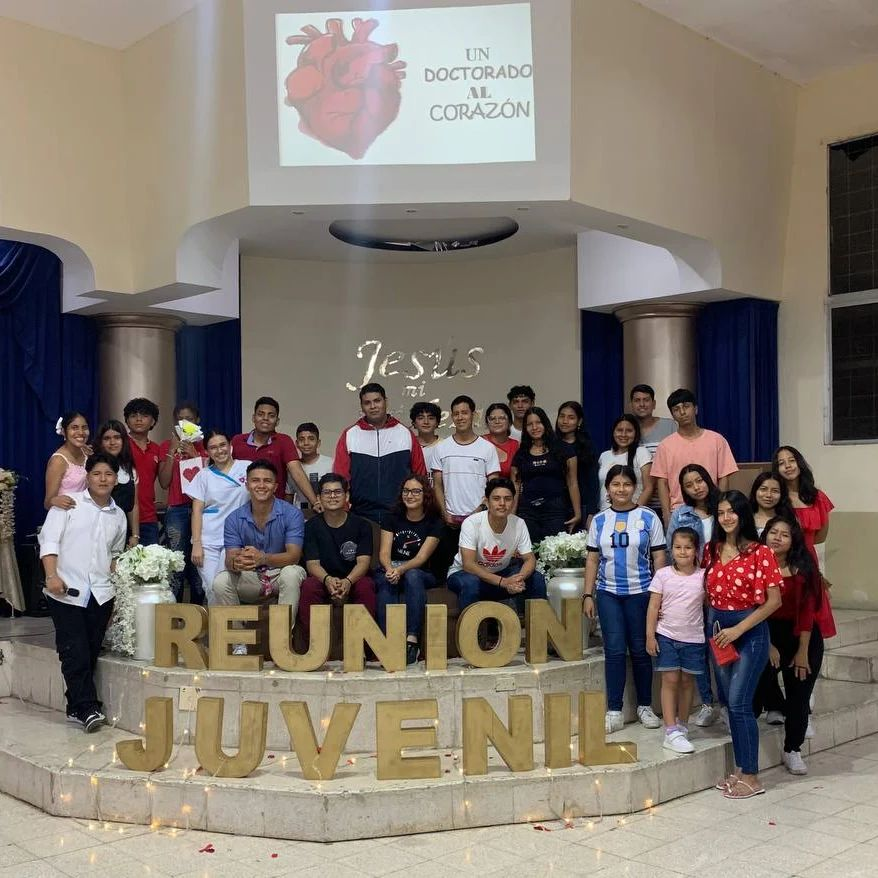
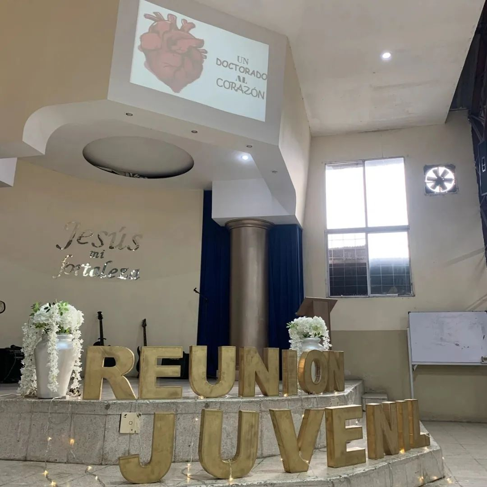
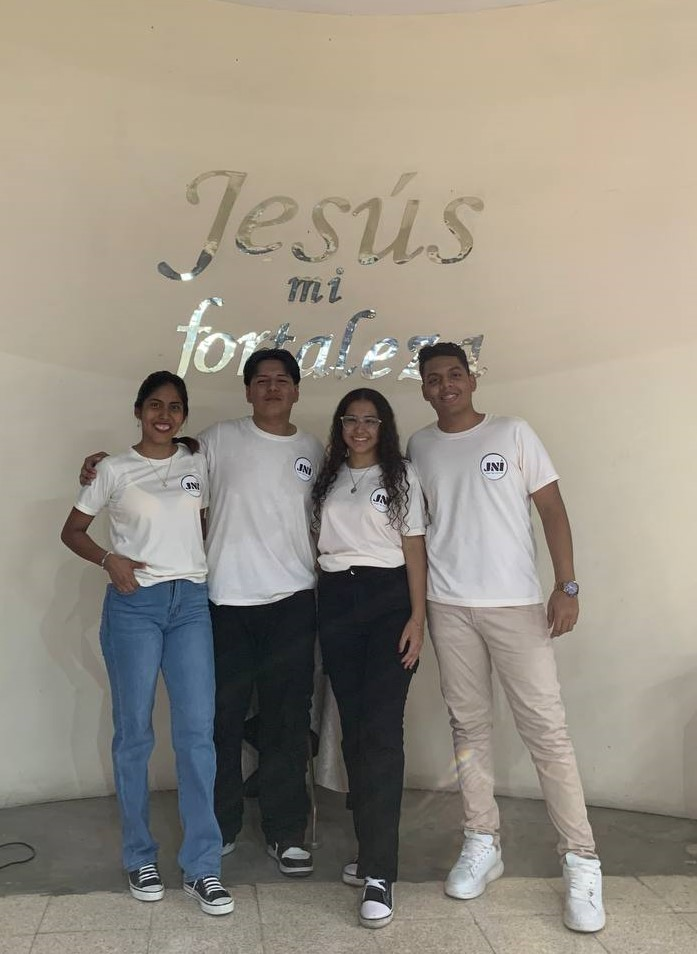
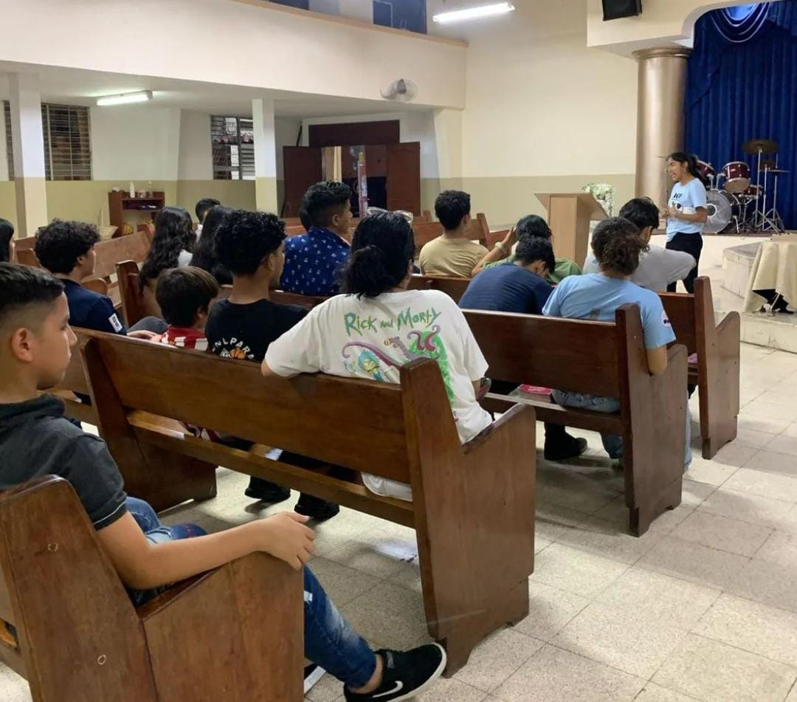
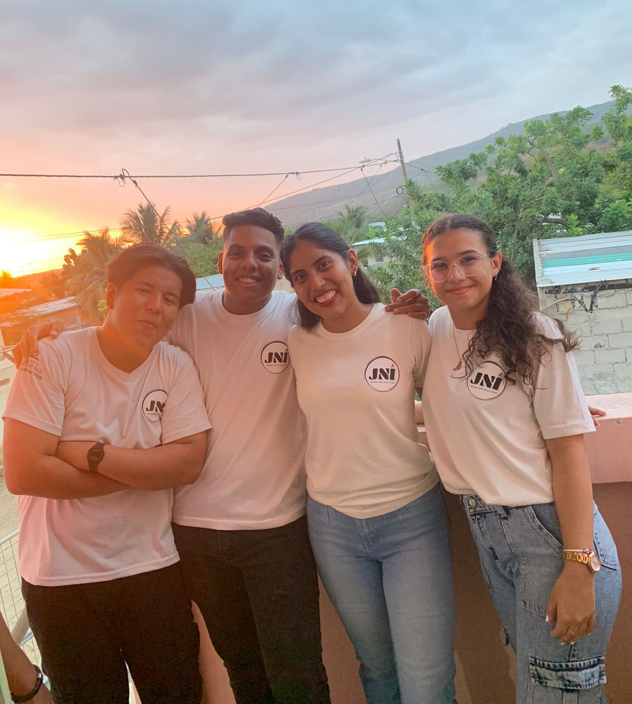

Juventud Nazarena Internacional (JNI) Es el ministerio juvenil de la Iglesia del Nazareno, dedicado a la formación y desarrollo espiritual de los jóvenes. Nuestro propósito es inspirar y equipar a los jóvenes para que sigan a Jesucristo y vivan como sus discípulos en el mundo actual.
La Juventud Nazarena Internacional (JNI) tiene como misión inspirar y equipar a los jóvenes para que sigan a Jesucristo y vivan como Sus discípulos en el mundo actual. A través de programas de discipulado, evangelismo, y servicio, la JNI busca formar jóvenes que sean líderes espirituales, comprometidos con su fe y con la transformación de sus comunidades.
La visión de la JNI es ver una generación de jóvenes apasionados por Cristo, que impacten positivamente a su entorno a través del amor y el servicio. Queremos ser una comunidad vibrante donde cada joven descubra su propósito en Dios, desarrolle sus dones y habilidades, y se convierta en un agente de cambio en la iglesia y en el mundo.
En la JNI, creemos que la comunidad es fundamental para el crecimiento espiritual y personal. Fomentamos un
entorno de apoyo y compañerismo donde los jóvenes pueden construir relaciones significativas, compartir
experiencias y aprender unos de otros. Nos esforzamos por crear un espacio dinámico y acogedor donde cada
joven se sienta valorado y amado, reflejando el amor de Cristo en todo lo que hacemos.
Únete a nosotros y descubre cómo puedes crecer espiritualmente, desarrollar tus talentos y hacer una
diferencia significativa en el mundo.
El Proyecto VVC es una iniciativa diseñada para involucrar a los jóvenes de nuestra comunidad eclesiástica en un programa de servicio activo, basado en los principios bíblicos de Romanos 12:7-8. Durante tres meses, los participantes se embarcarán en actividades de evangelismo, discipulado y liderazgo, con el objetivo de fomentar su crecimiento espiritual y personal, desarrollar sus habilidades, fortalecer los lazos comunitarios y evaluar su potencial de liderazgo. Este programa busca formar una generación de jóvenes comprometidos y preparados para servir y liderar dentro de la iglesia y en sus comunidades.